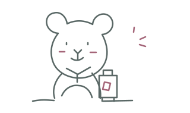
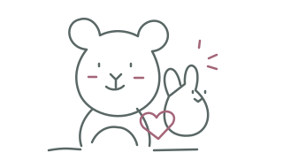

Little friends.
Big stories.
A journal and scrapbook for the plushies who go through life with you.
Open the scrapbookAn iPhone app in development by Pocketful Studio. English & Chinese first.
A pocket-sized adventure

One tiny suitcase. A whole day of new things.

A life beyond
the photo roll.
Give every plushie a name, a birthday and a travel-photo portrait. Record an outing, a celebration or an ordinary afternoon, with several photos in one memory.
Turn a favorite photo into a transparent sticker on a supported iPhone. Place it on a scrapbook page with photos and a little story, then export the finished page as a PNG.
The drawings here are original illustrations, not app screenshots. New editing, backup and collaboration features are still being tested.
A little book,
made together.
A couple or family space gives your companions a shared home. Keep personal memories private, and choose which stories belong together.
The small things we keep
- A companion
- A name & a portrait
- A day out
- Photos & a place
- A birthday
- A date to remember
- A paper memory
- A page to take with you
Yours to keep. Yours to share.
Before we go
Can I download it? Fluffolio is in development. There is no public App Store or TestFlight download yet. Contact the studio for development updates.
Do I need an account? You can skip sign-in for the local journal. An account is needed for friends, shared spaces and optional cloud features. Google sign-in is connected; Apple sign-in is being prepared.
Who sees my memories? Local memories stay on your device by default. Shared spaces are visible to their members. Cloud backup is optional and tied to your account.
Which languages? English and Chinese come first. Vietnamese and Thai are on the TestFlight roadmap.
Will it cost anything? Public pricing has not been announced. This preview does not take payments or sign you up for a subscription.
Can I delete my account? Request deletion in Me → Privacy & account. The studio reviews requests manually and confirms completion by account email. See the privacy policy for scope and timing.
Tell us their story.
Something your plushie journal should do? We would love to hear it.